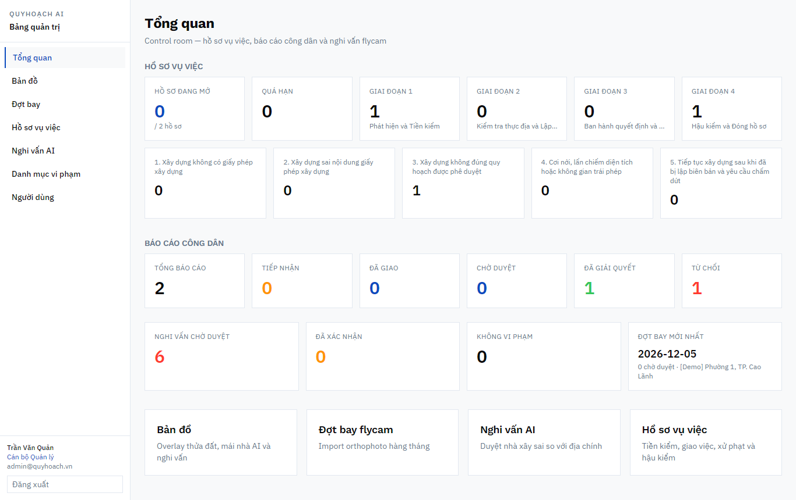
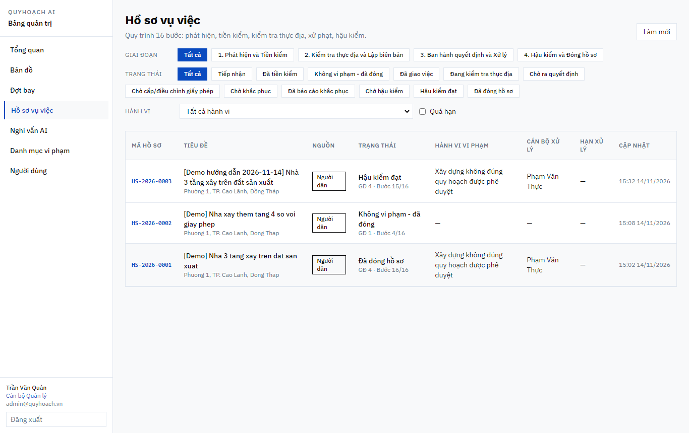
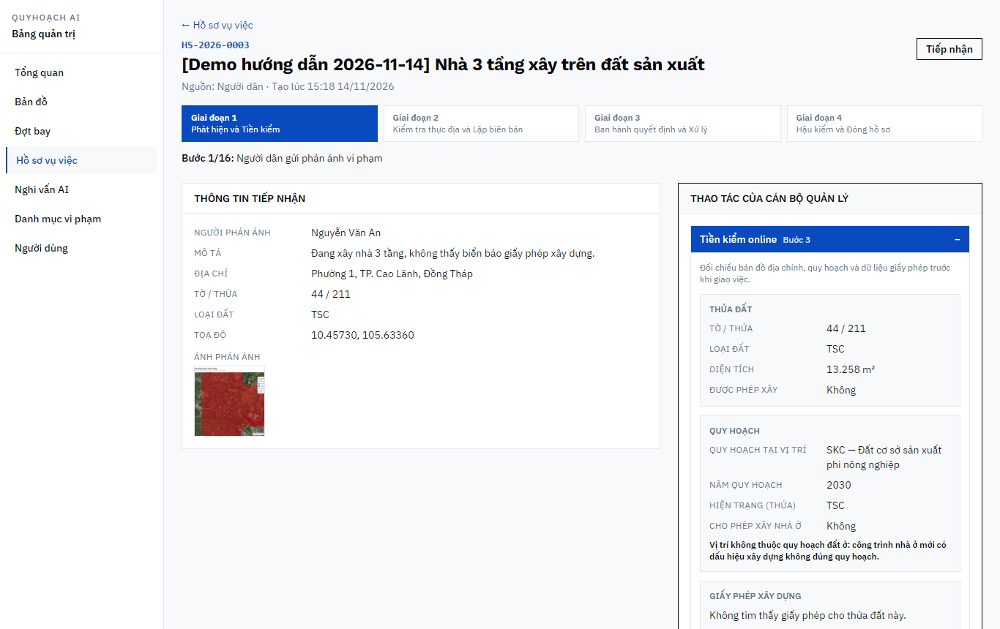
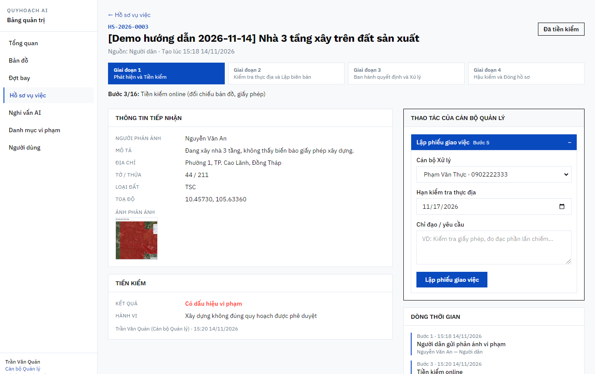
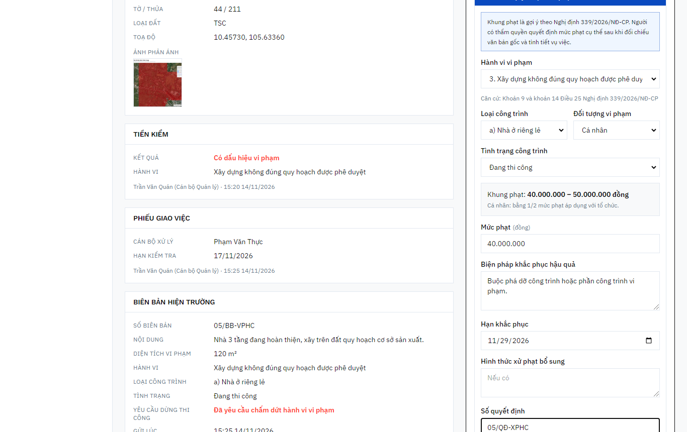
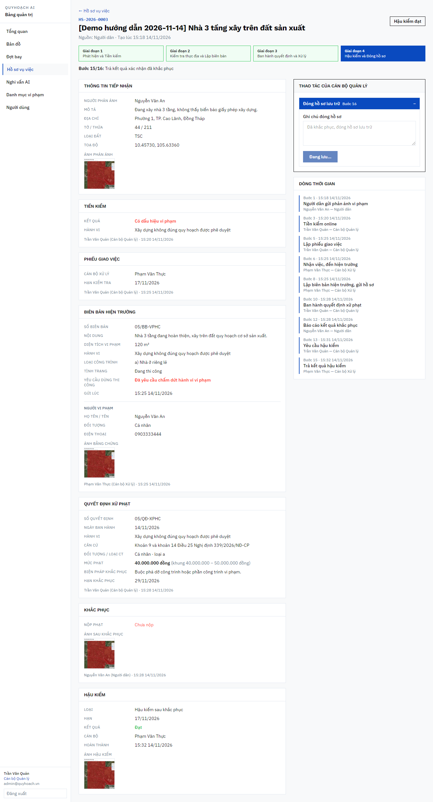
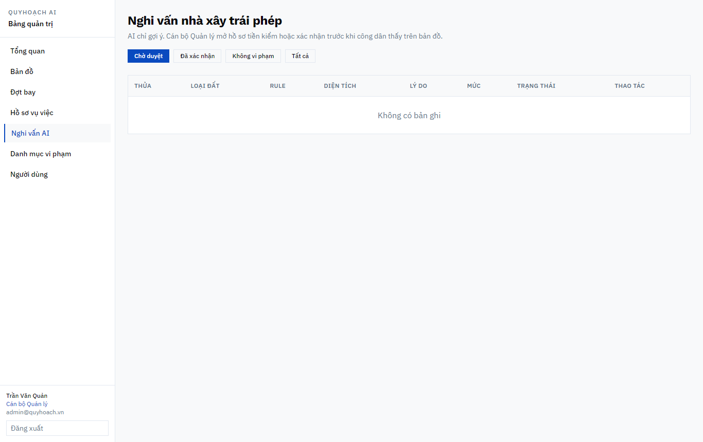
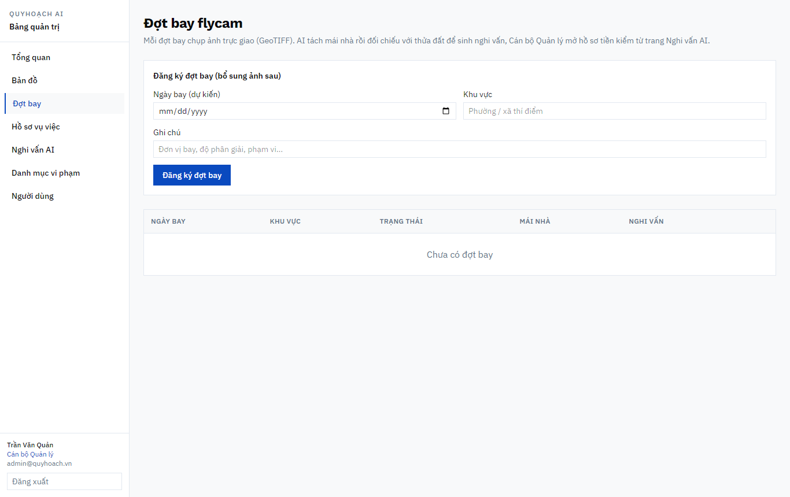
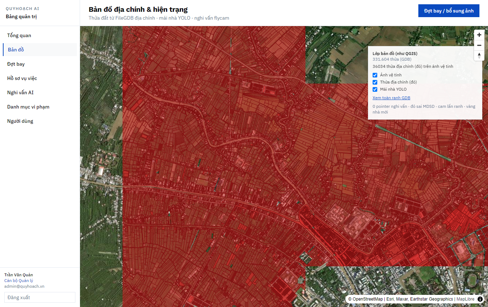
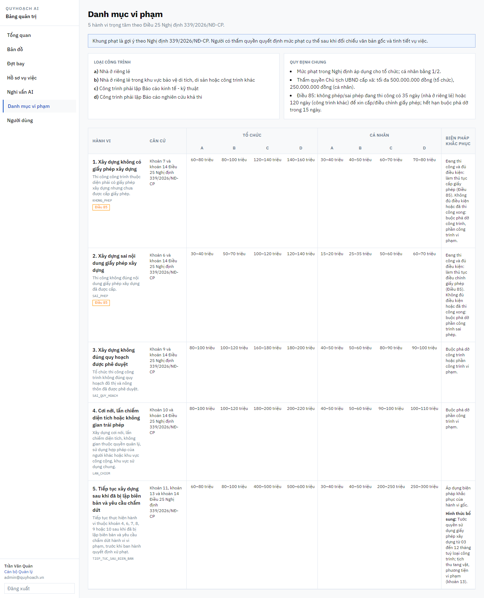

Ô Tài khoản đã chọn Trần Văn Quản — Cán bộ Quản lý.
Bấm nút Đăng nhập (tài khoản demo đã chọn sẵn).
Menu bên trái: Tổng quan · Bản đồ · Đợt bay · Hồ sơ vụ việc · Nghi vấn AI · Danh mục vi phạm · Người dùng. Nút Đăng xuất ở góc dưới.
1.2. Tổng quan

Hình 2 — Tổng quan: hồ sơ theo giai đoạn, theo hành vi, báo cáo công dân, nghi vấn AI
Khối
Nội dung
Hồ sơ vụ việc
Số hồ sơ đang mở, quá hạn, số hồ sơ ở từng giai đoạn 1–4
5 hành vi
Số hồ sơ theo từng trường hợp vi phạm
Báo cáo công dân
Tổng phản ánh, tiếp nhận, đã giao, chờ duyệt, đã giải quyết, từ chối
Nghi vấn
Nghi vấn AI chờ duyệt, đã xác nhận, không vi phạm; đợt bay mới nhất
Lối tắt
Bản đồ, Đợt bay flycam, Nghi vấn AI, Hồ sơ vụ việc
Mỗi ngày nên xem: Quá hạn, Nghi vấn chờ duyệt, và hồ sơ ở giai đoạn 1 và 3 (đang chờ bạn).
2. Danh sách Hồ sơ vụ việc
Tìm hồ sơ theo giai đoạn, trạng thái, hành vi, quá hạn.

Hình 3 — Hồ sơ vụ việc: bộ lọc và bảng hồ sơ
Bấm Hồ sơ vụ việc ở menu trái.
Lọc theo Giai đoạn (1–4), Trạng thái, Hành vi. Tích Quá hạn để xem hồ sơ trễ hạn.
Bảng ghi: mã hồ sơ, tiêu đề, nguồn (Người dân hoặc AI), trạng thái kèm bước, hành vi, cán bộ xử lý, hạn, giờ cập nhật.
Bấm mã hồ sơ để mở chi tiết. Bấm Làm mới để tải lại.
Trang chi tiết có: thanh 4 giai đoạn, dòng "Bước x/16", các khối thông tin (tiếp nhận, tiền kiểm, phiếu giao việc, biên bản, quyết định, khắc phục, hậu kiểm), khung Thao tác của Cán bộ Quản lý và Dòng thời gian.
Khung thao tác chỉ hiện việc bạn được làm ở bước hiện tại. Khi hồ sơ đang ở tay Cán bộ Xử lý, khung ghi "Hồ sơ đang chờ Cán bộ Xử lý thực hiện trên ứng dụng di động".
3. Bước 3–5 — Tiền kiểm, đóng hoặc giao việc
Đối chiếu dữ liệu trên máy trước khi cử người ra hiện trường.
3.1. Bước 3 — Tiền kiểm online

Hình 4 — Tiền kiểm online: thửa đất, quy hoạch tại vị trí, giấy phép xây dựng
Mở hồ sơ ở trạng thái Tiếp nhận. Khung thao tác mở sẵn Tiền kiểm online.
Đọc Thửa đất tại tọa độ hồ sơ: tờ/thửa, loại đất, diện tích, được phép xây hay không.
Đọc Quy hoạch: loại đất quy hoạch tại vị trí, năm quy hoạch (2030), hiện trạng thửa, có cho phép xây nhà ở không. Nếu vị trí không thuộc đất ở, phần mềm ghi rõ dấu hiệu "không đúng quy hoạch".
Đọc Giấy phép xây dựng của thửa. Giấy phép mẫu có nhãn "Dữ liệu mẫu để demo".
Nếu thửa đã có hồ sơ khác đang mở, phần mềm liệt kê để bạn tránh mở trùng.
Đọc Gợi ý hành vi và lý do gợi ý.
Chọn kết quả: Có dấu hiệu vi phạm hoặc Không vi phạm (đóng hồ sơ).
Nếu có dấu hiệu: chọn Hành vi nghi vi phạm (Cán bộ Xử lý có thể sửa khi lập biên bản), ghi chú, bấm Xác nhận nghi vấn vi phạm. Hồ sơ chuyển sang Đã tiền kiểm.
Dữ liệu đối chiếu
Nguồn hiện có
Thửa đất
331.604 thửa: GDB nền địa chính 269.822 thửa và TP. Cao Lãnh nội thị 61.782 thửa
Quy hoạch
Quy hoạch sử dụng đất TP. Cao Lãnh đến năm 2030, 11.293 vùng
Giấy phép
30 giấy phép mẫu (dữ liệu demo), chờ thay bằng dữ liệu thật
Vì giấy phép hiện là dữ liệu mẫu, kết quả "Không tìm thấy giấy phép cho thửa đất này" chưa đủ để kết luận xây không phép. Hãy kiểm tra hồ sơ giấy phép giấy trước khi kết luận.
3.2. Bước 4 — Không vi phạm: đóng hồ sơ
Trong khung Tiền kiểm online, chọn Không vi phạm (đóng hồ sơ).
Ghi lý do vào ô Ghi chú.
Bấm Đóng: không vi phạm. Hồ sơ chuyển sang Không vi phạm - đã đóng.
Người phản ánh nhận thông báo "không phát hiện vi phạm, hồ sơ đã đóng".
3.3. Bước 5 — Lập phiếu giao việc

Hình 5 — Lập phiếu giao việc: chọn Cán bộ Xử lý, hạn kiểm tra, chỉ đạo
Mở hồ sơ ở trạng thái Đã tiền kiểm. Khung thao tác hiện Lập phiếu giao việc.
Chọn Cán bộ Xử lý trong danh sách (tên kèm số điện thoại).
Chọn Hạn kiểm tra thực địa.
Ghi Chỉ đạo / yêu cầu, ví dụ "Kiểm tra giấy phép, đo phần lấn chiếm".
Bấm Lập phiếu giao việc. Hồ sơ chuyển sang Đã giao việc. Cán bộ được chọn nhận thông báo trên app.
4. Bước 9–10 — Rà soát và ban hành quyết định
Sau khi Cán bộ Xử lý gửi biên bản, hồ sơ ở trạng thái Chờ ra quyết định.
4.1. Bước 9 — Rà soát biên bản
Mở hồ sơ ở trạng thái Chờ ra quyết định. Bạn nhận thông báo khi biên bản đến.
Đọc khối Biên bản hiện trường: số biên bản, nội dung, diện tích, hành vi, loại công trình, tình trạng, yêu cầu dừng thi công, người vi phạm, ảnh bằng chứng.
Nếu biên bản thiếu hoặc sai: mở Trả lại bổ sung biên bản, ghi rõ nội dung cần bổ sung (bắt buộc), bấm Trả lại biên bản. Hồ sơ quay về Cán bộ Xử lý.
Nếu đủ: chuyển sang bước 10.
4.2. Bước 10 — Ban hành quyết định xử phạt

Hình 6 — Form quyết định: khung phạt tự hiện theo hành vi, loại công trình, đối tượng
Mở Ban hành quyết định xử phạt trong khung thao tác.
Kiểm tra Hành vi vi phạm. Dưới ô có dòng căn cứ (khoản, Điều 25).
Chọn Loại công trình (a–d) và Đối tượng vi phạm (Cá nhân hoặc Tổ chức).
Chọn Tình trạng công trình: Đang thi công hoặc Đã thi công xong.
Đọc Khung phạt phần mềm tự tính. Cá nhân bằng 1/2 tổ chức.
Nhập Mức phạt (đồng). Mức phải nằm trong khung; ngoài khung thì ô đỏ và không ban hành được.
Kiểm tra Biện pháp khắc phục hậu quả (điền sẵn theo hành vi, sửa được).
Chọn Hạn khắc phục. Với nhánh Điều 85, không cần nhập hạn này.
Ghi Hình thức xử phạt bổ sung nếu có.
Nhập Số quyết định, ví dụ 123/QĐ-XPHC.
Bấm Ban hành quyết định xử phạt.
Trường hợp
Phần mềm làm gì
Mức phạt vượt thẩm quyền Chủ tịch UBND cấp xã (500 triệu tổ chức, 250 triệu cá nhân)
Hiện cảnh báo: cần chuyển cấp có thẩm quyền ban hành quyết định
Case 1 hoặc 2, công trình Đang thi công
Hiện khung "Áp dụng Điều 85 — theo dõi cấp phép": 35 ngày (nhà ở riêng lẻ) hoặc 120 ngày (công trình c, d). Hồ sơ chuyển sang Chờ cấp/điều chỉnh giấy phép
Các trường hợp khác
Hồ sơ chuyển sang Chờ khắc phục
Case 5 (tiếp tục sau biên bản)
Khung phạt khoản 11; gợi ý hình thức bổ sung: tước giấy phép 3–12 tháng, tịch thu tang vật
Tái phạm sau quyết định (khoản 12)
Dùng khung khoản 12, cao hơn khoản 11
Sau khi ban hành: người vi phạm nhận thông báo trên app (nếu số điện thoại trùng tài khoản). Người phản ánh nhận thông báo "đã ban hành quyết định xử lý", không thấy mức phạt.
Lưu ý pháp lý: Khung phạt là gợi ý theo Nghị định 339/2026/NĐ-CP. Người có thẩm quyền quyết định mức cụ thể sau khi đối chiếu văn bản gốc và tình tiết vụ việc.
5. Sau quyết định — Điều 85, Case 5, nhập thay
Các thao tác phụ khi hồ sơ ở Chờ cấp/điều chỉnh giấy phép hoặc Chờ khắc phục.
5.1. Nhánh Điều 85
Người vi phạm nộp số giấy phép trên app. Nếu họ nộp giấy trực tiếp, bạn mở Nộp giấy phép được cấp/điều chỉnh, nhập số giấy phép, bấm Ghi nhận giấy phép.
Sau khi có giấy phép, hồ sơ tự chuyển sang Chờ hậu kiểm loại "kiểm tra sau cấp phép", hạn 5 ngày. Cán bộ Xử lý kiểm tra.
Hết hạn hoặc không được cấp: mở Hết hạn/không được cấp phép: buộc phá dỡ, tích "Tôi xác nhận chuyển sang buộc phá dỡ", bấm Buộc phá dỡ. Hồ sơ chuyển sang Chờ khắc phục, hạn 15 ngày.
5.2. Vẫn tiếp tục thi công (Case 5)
Mở Ghi nhận vẫn tiếp tục thi công (có ở Chờ ra quyết định, Chờ cấp/điều chỉnh giấy phép, Chờ khắc phục).
Nhập Mô tả hiện trạng. Thêm ảnh nếu có.
Bấm Ghi nhận tiếp tục thi công.
Trước quyết định: hồ sơ đổi sang hành vi 5 (khoản 11). Sau quyết định: ghi nhận khoản 12 để xử lý tiếp.
5.3. Nhập thay báo cáo khắc phục
Dùng khi người vi phạm không có tài khoản hoặc nộp giấy tờ trực tiếp.
Mở Báo cáo kết quả khắc phục khi hồ sơ ở Chờ khắc phục.
Tích Đã nộp tiền phạt nếu đã nộp. Gắn ảnh biên lai nếu có.
Gắn ảnh hiện trạng sau khắc phục (1–6 ảnh, bắt buộc). Ghi chú.
Bấm Báo cáo kết quả khắc phục. Hồ sơ chuyển sang Đã báo cáo khắc phục.
6. Bước 13 và 16 — Yêu cầu hậu kiểm, đóng hồ sơ
Xác minh hiện trạng sau khắc phục rồi lưu trữ hồ sơ.
6.1. Bước 13 — Yêu cầu hậu kiểm
Mở hồ sơ ở trạng thái Đã báo cáo khắc phục. Xem ảnh báo cáo khắc phục.
Mở Yêu cầu hậu kiểm. Chọn Hạn hậu kiểm (mặc định 3 ngày).
Ô Cán bộ Xử lý hậu kiểm: để "Giữ nguyên" hoặc chọn cán bộ khác.
Ghi chú nếu cần. Bấm Yêu cầu hậu kiểm. Hồ sơ chuyển sang Chờ hậu kiểm; cán bộ nhận thông báo.
Cán bộ Xử lý trả kết quả (bước 14–15). Không đạt: hồ sơ quay về Chờ khắc phục, người vi phạm khắc phục và báo cáo lại, bạn yêu cầu hậu kiểm lần nữa.
6.2. Bước 16 — Đóng hồ sơ lưu trữ

Hình 7 — Hồ sơ đã qua đủ 4 giai đoạn: các khối thông tin bên trái, Đóng hồ sơ lưu trữ và Dòng thời gian bên phải
Mở hồ sơ ở trạng thái Hậu kiểm đạt.
Rà lại các khối: tiền kiểm, phiếu giao việc, biên bản, quyết định, khắc phục, hậu kiểm.
Bấm Đóng hồ sơ lưu trữ. Hồ sơ chuyển sang Đã đóng hồ sơ.
Người phản ánh nhận thông báo "vụ việc đã xử lý xong".
7. Nghi vấn AI
Bước 2: biến cảnh báo của AI thành hồ sơ tiền kiểm.

Hình 8 — Nghi vấn nhà xây trái phép. Hiện chưa có bản ghi vì chưa có đợt bay
Bấm Nghi vấn AI ở menu trái. Mặc định lọc Chờ duyệt; có thêm Đã xác nhận, Không vi phạm, Tất cả.
Mỗi dòng ghi: thửa, loại đất, quy tắc AI kèm Gợi ý hành vi, diện tích, lý do, mức độ, trạng thái.
Bấm Mở hồ sơ tiền kiểm để tạo hồ sơ vụ việc. Sau đó làm bước 3 như phần 3.
Nếu chắc chắn không vi phạm, bấm Không vi phạm.
Dòng đã có hồ sơ hiện liên kết Xem hồ sơ.
AI phát hiện
Gợi ý hành vi
Sai mục đích sử dụng đất
3. Không đúng quy hoạch
Lấn ranh thửa
4. Cơi nới, lấn chiếm
Nhà mới xuất hiện
1. Không phép; 2. Sai phép nếu thửa đã có giấy phép
AI chỉ gợi ý. Nghi vấn không tự thành vi phạm. Bạn quyết định mở hồ sơ hay không.
8. Đợt bay flycam
Đăng ký đợt bay; ảnh được bổ sung sau trên máy trạm AI.

Hình 9 — Đợt bay flycam: form đăng ký và bảng đợt bay (chưa có đợt bay nào)
Hiện trạng: chưa bay đợt nào. Trang online không nhận được ảnh GeoTIFF vì file nặng nhiều GB, vượt giới hạn tải lên của máy chủ online.
8.1. Đăng ký đợt bay (trên web online)
Bấm Đợt bay ở menu trái.
Trong khối Đăng ký đợt bay (bổ sung ảnh sau): chọn Ngày bay (dự kiến), nhập Khu vực (phường/xã thí điểm), ghi chú đơn vị bay, độ phân giải, phạm vi.
Bấm Đăng ký đợt bay. Đợt bay hiện trong bảng với trạng thái Chờ ảnh.
8.2. Bổ sung ảnh (trên máy trạm AI)
Chép file ảnh trực giao (GeoTIFF) vào máy trạm AI.
Trên máy trạm, mở web quản trị chạy kèm API cục bộ (bộ phận kỹ thuật cài sẵn, xem Sổ tay quản trị).
Ở dòng đợt bay, bấm Bổ sung ảnh, chọn file. Đợt bay chuyển sang Chờ AI xử lý, rồi Đang chạy AI, rồi Xong.
Cột Mái nhà và Nghi vấn hiện số đếm. Bấm liên kết để xem nghi vấn hoặc xem trên bản đồ.
Vào Nghi vấn AI để xử lý từng nghi vấn (phần 7).
Trên web online, bấm Bổ sung ảnh chỉ hiện hướng dẫn chép ảnh sang máy trạm AI, không tải file lên.
9. Bản đồ
Thửa địa chính, mái nhà AI và điểm nghi vấn trên ảnh vệ tinh.

Hình 10 — Bản đồ địa chính và hiện trạng: thửa đất (đỏ) trên ảnh vệ tinh, bảng lớp bên phải
Bấm Bản đồ. Bản đồ mở ở vùng nhiều thửa đất.
Bảng Lớp bản đồ bên phải: bật/tắt Ảnh vệ tinh, Thửa địa chính (đỏ), Mái nhà YOLO. Dòng trên cùng ghi tổng số thửa và số thửa trong khung nhìn.
Bấm Xem toàn ranh GDB để thu về toàn vùng có dữ liệu.
Phóng to và bấm vào thửa để xem thông tin.
Nút Đợt bay / bổ sung ảnh ở góc trên mở trang Đợt bay.
Màu điểm nghi vấn: đỏ sai mục đích sử dụng đất, cam lấn ranh, vàng nhà mới.
10. Danh mục vi phạm
Bảng tra cứu 5 hành vi theo Điều 25 Nghị định 339/2026/NĐ-CP.
Bấm Danh mục vi phạm ở menu trái.
Đọc khung lưu ý pháp lý ở đầu trang.
Khối Loại công trình: định nghĩa a, b, c, d.
Khối Quy định chung: cá nhân bằng 1/2 tổ chức; thẩm quyền cấp xã; thời hạn Điều 85.
Bảng chính: mỗi hành vi có căn cứ, khung phạt tổ chức và cá nhân cho a–d, biện pháp khắc phục, hình thức bổ sung. Hành vi có nhãn Điều 85 là hành vi được xin cấp/điều chỉnh giấy phép.

Trang Danh mục vi phạm: 5 hành vi, khung phạt tổ chức và cá nhân theo loại công trình
Lọc theo vai trò: Người dân, Cán bộ Xử lý, Cán bộ Quản lý.
Bấm Thêm người dùng. Nhập họ tên, email, số điện thoại, chọn vai trò, đặt mật khẩu (tối thiểu 6 ký tự). Bấm Tạo.
Bấm một người trong danh sách để sửa. Để trống mật khẩu nếu giữ nguyên. Bấm Cập nhật.
Bấm Xóa để xóa tài khoản.
Nên nhập số điện thoại cho Cán bộ Xử lý: danh sách giao việc hiện tên kèm số. Với Người dân, số điện thoại dùng để khớp người vi phạm trong biên bản.
Tài khoản đang đăng nhập không tự xóa, đổi email hay hạ quyền được.
12. Làm việc trên app
Khi không có máy tính, Cán bộ Quản lý dùng app với cùng tài khoản.